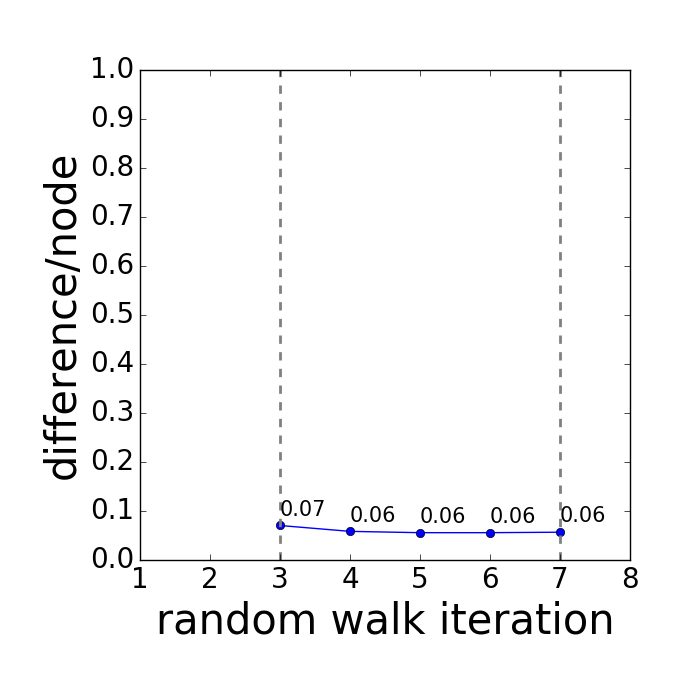

Reproducibility report
chr21. HIC001 vs HIC002
Report generated 2017-06-06 01:11:54 by GenomeDISCO (DIfferences in Smoothed COntact maps)
Sequencing stats
| |
HIC001 |
HIC002 |
| Sequencing depth |
0.990285 M |
1.493638 M |
Reproducibility analysis
Reproducibility score = 0.941622590451
